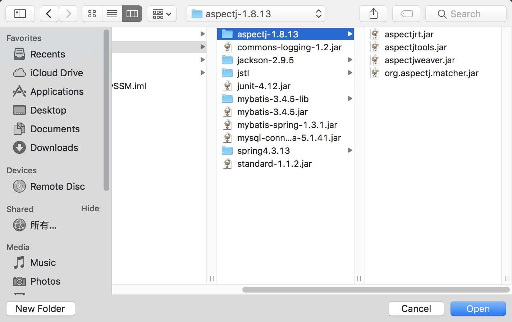

1、引用 AspectJ jar 包
点击 File>Project Structure...，选中 Libraries，添加 java 引用
在 lib 中选择 aspectj-1.8.13 文件夹


2、创建两个新的包
com.sajor.study.c03
test.com.sajor.study.c03
3、创建一个业务类 UserXML
package com.sajor.study.c03;
public class UserXML {
private int id = 20180101;
private String name = "AspectJXML 测试用户";
private String sex;
private String email;
public int getId() {
return id;
}
public void setId(int id) {
this.id = id;
}
public String getName() {
return name;
}
public void setName(String name) {
this.name = name;
}
public String getSex() {
return sex;
}
public void setSex(String sex) {
this.sex = sex;
}
public String getEmail() {
return email;
}
public void setEmail(String email) {
this.email = email;
}
@Override
public String toString() {
StringBuffer stringBuffer = new StringBuffer();
stringBuffer.append("id=");
stringBuffer.append(id);
stringBuffer.append("\n");
stringBuffer.append("name=");
stringBuffer.append(name);
return stringBuffer.toString();
}
public void saveUser() {
System.out.println("保存用户信息...");
}
public void queryUser() {
System.out.println("查看用户信息...");
//email.length();
System.out.println(this.toString());
}
}
4、创建一个 AOP 切面类 UserXMLAspectJ
package com.sajor.study.c03;
//定义代理通知类(切面类)
public class UserXMLAspectJ {
public void aspectBefore() {
System.out.println("方法执行之前...");
}
public void aspectAfter() {
System.out.println("方法执行之后...");
}
}
2、创建配置类 spring-config-c03-aop.xml
<?xml version="1.0" encoding="UTF-8"?>
<beans xmlns="http://www.springframework.org/schema/beans"
xmlns:xsi="http://www.w3.org/2001/XMLSchema-instance"
xmlns:aop="http://www.springframework.org/schema/aop"
xsi:schemaLocation="http://www.springframework.org/schema/beans
http://www.springframework.org/schema/beans/spring-beans.xsd
http://www.springframework.org/schema/aop
http://www.springframework.org/schema/aop/spring-aop.xsd">
<!-- 1.定义业务 bean(目标类) -->
<bean id="userxml" class="com.sajor.study.c03.UserXML"/>
<!-- 2.定义代理类(切面类) -->
<bean id="myAspectJ" class="com.sajor.study.c03.UserXMLAspectJ"/>
<!-- 3.定义 aspectj-->
<aop:config>
<aop:aspect id="userAspect" ref="myAspectJ">
<!--3.1 定义切点-->
<aop:pointcut id="userQueryUser" expression="execution(* com.sajor.study.c03.UserXML.queryUser(..))"/>
<!--3.2 定义通知-->
<aop:before pointcut-ref="userQueryUser" method="aspectBefore" />
<aop:after-returning pointcut-ref="userQueryUser" method="aspectAfter"/>
</aop:aspect>
</aop:config>
</beans>
3、新建一个测试类 AspecJXMLTest
package test.com.sajor.study.c03;
import com.sajor.study.c03.UserXML;
import org.springframework.context.ApplicationContext;
import org.springframework.context.support.ClassPathXmlApplicationContext;
public class AspecJXMLTest {
public static void main(String[] args) {
ApplicationContext ctx = new ClassPathXmlApplicationContext("spring-config-c03-aop.xml");
UserXML user = (UserXML) ctx.getBean("userxml");
user.queryUser();
}
}
4、运行测试类
运行结果

本文由 Sajor
创作，采用 知识共享署名4.0 国际许可协议进行许可
本站文章除注明转载/出处外，均为本站原创或翻译，转载前请务必署名
最后编辑时间为: 2019-07-28T19:26:42+08:00